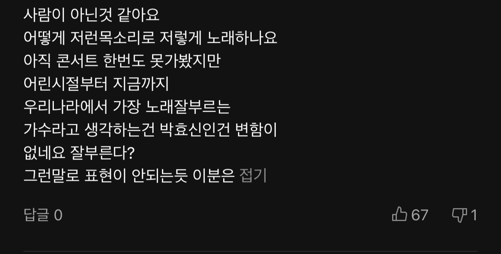
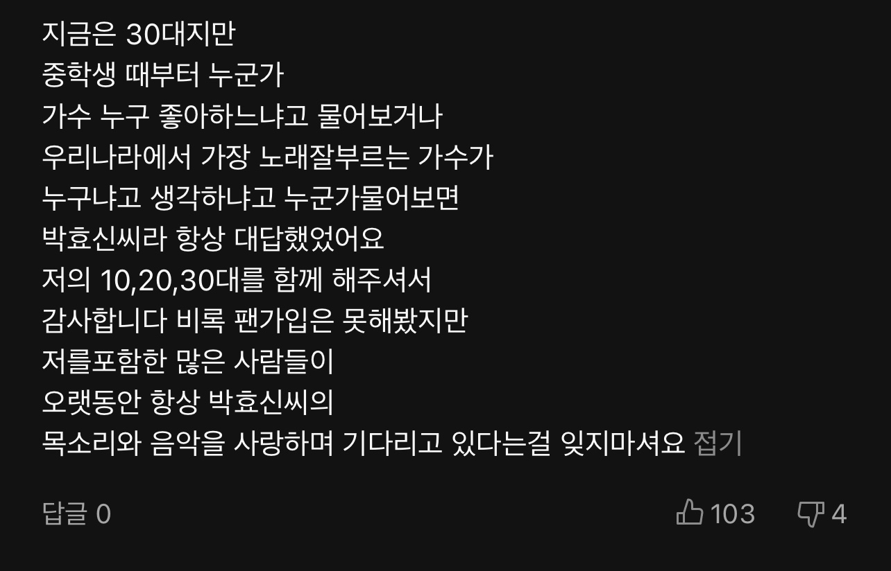
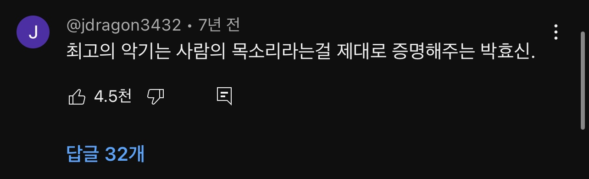
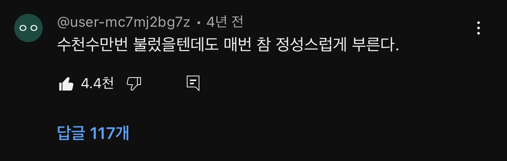
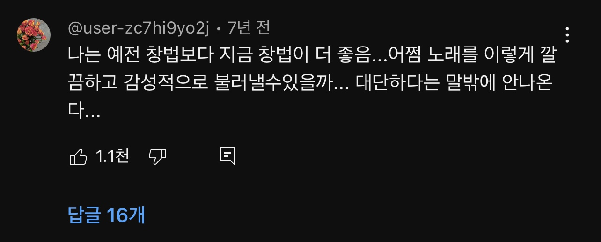

개요
박효신의 창법 변화
박효신은 재능이 많기도 하지만 그것에 안주하지 않고 부단히 노력해
현재 위치에 이른 가수로 평가받는데, 이를 알 수 있는 부분이 데뷔
이후부터 지금까지 지속적으로 창법이 변화하고 있다는 것이다. 데뷔
초중반 소몰이창법의 가장 큰 단점으로 지적되던 가사 전달력 부족이나
감정 과잉 등을 지속적으로 교정해 나간 점과 앨범마다 조금씩 달라지는
창법들이 그 예다. 특히 데뷔 초의 라이브와 최근의 야생화 이후
라이브를 들어 보면 그야말로 천지차이가 난다. 물론 취향에 따라 예전의
목소리가 그립다는 반응도 있지만 실력적으로 큰 진전을 이뤘다.
이에 대한 설명을 박효신이 직접 자세하게 다룬 영상을 보고싶으면 아래
영상을 시청하길 바란다.
박효신의 창법 변화는 정규 앨범 타이틀을 순서대로 들어보면 쉽게 눈치챌 수 있다. 초기에는 굵직한 음성을 제외하면 딱히 특징지을 만한 발성법이 없었으며 라이브를 들어보면 1집 후반기부터 2집 때까지는 다소 거친 소리가 많고 숨소리가 많이 들어간다는 걸 확인할 수 있다. 3집부터는 거친 보컬이 차분해지고 정리되기 시작했다. 이후로도 계속 대표적인 소몰이 보컬로 여겨지다가 4집부터는 좀 더 소리가 날카로워졌다는 느낌이 든다. 이후 5집 The Breeze of Sea 에서는 굵고 묵직한 소리에서 거의 탈피하여 한결 섬세하고 편안해진 모습을 보여 주었다. 많은 팬들이 7집, 4집과 더불어 명반으로 꼽는 앨범.
이에 대해 본인은 "음악을 좀 편하게 하고 싶어서 창법을 바꿨다"라고 말했다. 소몰이창법의 유행 및 양산화가 가요계에 판을 치자 이 창법의 대중화에 크게 기여한 박효신이 오히려 그 흐름을 거스르고 싶어 했을 거라는 등 여러 추측을 내놓았지만, 2014년에 지큐 코리아와의 인터뷰에서 이에 대해 언급했다.
아래의 타임라인에 있는 영상들을 하나씩 보다 보면 박효신의 창법 변화를 보다 쉽게 체감할 수 있을 것이다.
더 많은 박효신에 대한 정보를 얻기 위해서는 박효신 나무위키를
방문해보기를 바란다.
박효신 나무위키 바로가기
박효신 음악 영상 더보기
추억은 사랑을 닮아
비가 오는 날씨와 박효신의 아름다운 음색, 은은하고도 안락한 분위기가
어우러져 많은 사람들에게 인기를 얻은 영상들 중 하나이다. 2013년의
영상이기 때문에, 데뷔했을 때 당시의 소몰이 창법에 비해서는 훨씬
부드러워진 느낌이 든다. 개인적으로 이 시기의 창법이 가장 마음에
든다. 굿바이-Goodbye 앨범부터는 목소리가 너무 얇다는 느낌이, 데뷔
당시에는 너무 두껍다는 느낌이 들지만, 이 시기의 목소리는 그 두
시기의 장점만을 모아놓은 것 같은 느낌이 든다.
좋은 사람
앞선 영상보다 한 해 뒤인 2014년도의 영상이다. 위에서 설명했듯이,
데뷔 초의 박효신과 현재의 박효신의 장점이 융합되어있는 느낌의
창법이라고 할 수 있겠다. 개인적으로 굉장히 좋아하는 창법이자
영상이다. 이 영상만 몇백번은 본 것 같다. 더 많은 사람들이 이 영상을
시청하고 박효신에 빠져들었으면 좋겠다.
눈의 꽃
박효신이 데뷔 시절 불렀던 눈의 꽃을 2015년의 버전으로 들을 수 있다.
미안하다 사랑하다의 ost인 눈의 꽃을 초반과는 다른 느낌을 받도록
불렀다. 개인적으로 나는 이 버전이 더 마음에 든다.
타임라인
1999년: 데뷔
첫 번째 앨범 '해줄 수 없는 일'로 데뷔했다. 신선한 목소리와 독특한
스타일로 주목받기 시작했다. 윤사라-신재홍 콤비가 박효신과 첫 작업한
곡으로 1999년에 발매된 박효신의 데뷔곡이자 1집 타이틀곡. 이소라의
프로포즈로 지상파 TV 프로에 처음으로 모습을 보인 박효신이 프로그램
말미에 불렀고 그 모습이 화제가 되어 1집은 40만장 이상의 판매량을
올렸으며 가요 프로그램에서도 10위 권 안에 들었다.
2002년: '눈의 꽃'
앨범 'Time Honored Voice'에서 '눈의 꽃'이 큰 인기를 얻었다. 겨울 시즌의 대표적인 발라드 곡으로 자리매김하였다. 드라마 '미안하다 사랑한다'의 ost로써, 많은 사람들의 감동을 샀다. 감동적이고 애절한 가사와 더불어 박효신의 호소력있는 가창력, 창법, 목소리로 사람들의 감동을 더욱 효과적으로 불러일으켰다.
2014년: '야생화'
싱글 '야생화' 발표하였다. 박효신의 커리어에서 중요한 전환점이 되며, 광범위한 대중적 인기를 얻었다. 박효신 스스로가 이 꽃을 자신에 의인화했다고 말할 만큼자신의 우여곡절 많았던 인생을 음악적으로 잘 표현한 이 곡은 박효신이 직접 작곡, 작사, 프로듀서의 역할을 맡았고, 박효신의 절친인 그룹 긱스의 정재일이 공동 작곡과 편곡에 참여하고, 또 모든 세션에 직접 참여하는 등 음악적 퀄리티를 더욱 높였다. 또한 그의 음악을 사랑하는 김지향이 공동 작사가로참여, 대중들의 귀와 감성을 촉촉하게 만들어 주었다.
2016년: '숨'
싱글 '숨'을 발표하였다. 감성적인 보컬과 애절한 가사가 돋보이는 곡으로 많은 사랑을 받았다. 2016년에 발매한 박효신의 7집 앨범 I am A Dreamer의 야생화, HAPPY TOGETHER, Shine Your Light와 함께 4번째 선공개 곡. 2016년 멜론 연간 차트 47위에 이름을 올렸다.
2021년: 'Goodbye'
싱글 'Goodbye'를 발표하였다. 애절한 멜로디와 가사가 많은 이들의 공감을 불러일으켰다. 맑은 봄날, 지는 해를 보며 보내는 서글프지만 따뜻한 인사 ‘Goodbye’. 박효신이 끊임없이 이야기해온 관계와 사랑의 이야기 속에 필연적인 요소인 ‘이별’을, 단절이 아닌 ‘놓아줌’ 그리고 ‘새로운 시작’으로 풀어낸 곡이다. 또한 그의 8집을 통해 보여줄 새로운 시도를 위한 도약의 예고이기도 하다. 7집 발매 이후 다양한 음악을 싱글 형태로 선보인 박효신은 8집의 대표하는 메인 곡인 ‘Goodbye’를 또 한 번 싱글 컷으로 발매하며 모든 작품들은 그가 그려 나아갈 커다란 그림의 일부라는 것, 각 앨범들은 단절되어 있지 않고 선을 그려나가고 있다는 것을 암시한다.
2020년대: 지속적인 음악 활동
변화하는 음악 산업 속에서도 자신만의 색깔을 유지하였다. 발라드 가수 뿐만 아니라 뮤지컬 배우로써의 활동도 이어나갔고, 그들 중에서 '그 눈을 떠' 라는 뮤지컬 곡이 사람들 사이에서 유명해지기도 하였다. '그 눈을 떠' 이외에도 '마지막 춤' 이라는 노래를 커버한 것도 굉장히 인상 깊다.
박효신에 대한 사람들의 반응 보기
멜론 뮤직 어워드 박효신 라이브 아이돌 반응
박효신 야생화 해외반응
영화배우 강동원이 들려주는 박효신 썰
박효신에 대한 어느 멜론 유저의 반응과 이에 공감하는 많은 사람들 1
박효신에 대한 어느 멜론 유저의 반응과 이에 공감하는 많은 사람들 2
박효신에 대한 어느 유튜브 유저의 반응과 이에 공감하는 많은 사람들 1
박효신에 대한 어느 유튜브 유저의 반응과 이에 공감하는 많은 사람들 2
박효신에 대한 어느 유튜브 유저의 반응과 이에 공감하는 많은 사람들 3 202201043 김태언 컴퓨터공학과
갤러리